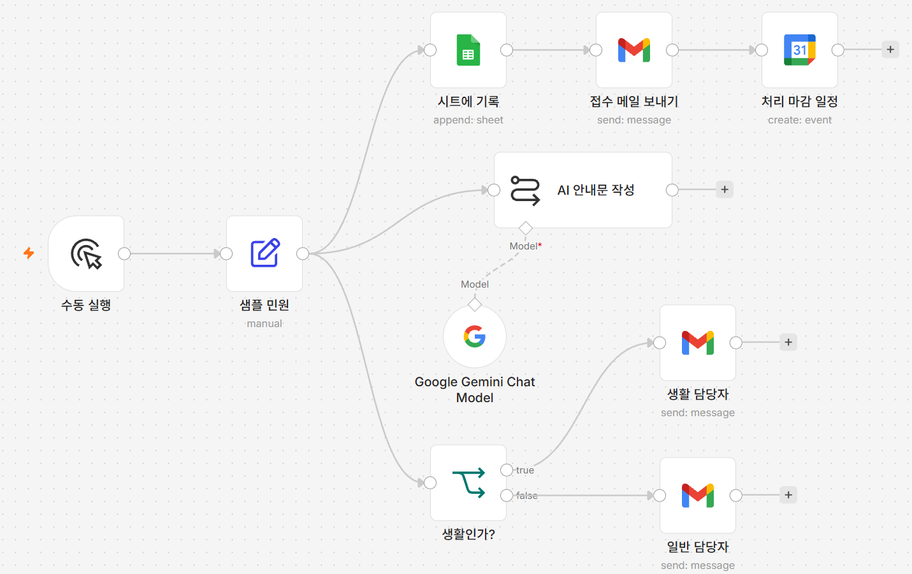
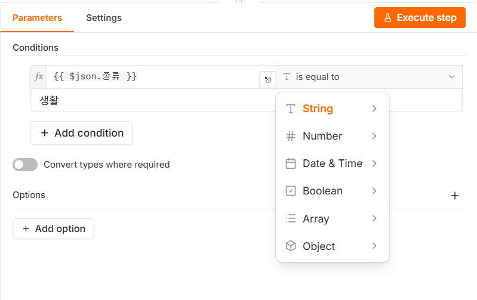
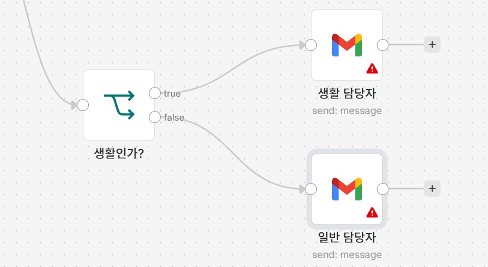

민원이 다 같지 않습니다. 쓰레기 무단투기는 환경 담당, 도로 파임은 도로 담당,
소음은 또 다른 담당입니다. 그런데 지금까지 만든 워크플로우는 모든 민원을
똑같이 처리합니다. 종류가 무엇이든 같은 시트에 적고 같은 메일을 보냅니다.
실제 업무에서는 누군가가 접수 내용을 읽고 "이건 저쪽 담당이네" 하고 넘깁니다.
그런데 그 판단 자체는 대개 아주 단순합니다 — 종류 칸 하나만 보면
끝납니다. 단순한데 사람이 매번 해야 하는 일, 그게 자동화하기 가장 좋은
일입니다.
이번에 배우는 IF 노드가 그 갈림길입니다. 조건이 맞으면 이쪽 길,
아니면 저쪽 길. 갈림길 하나만 놓을 줄 알면 조건을 바꿔가며 얼마든지 늘릴 수
있습니다.
여기서부터 워크플로우가 "판단"을 합니다
지금까지 만든 노드들은 시키는 일을 순서대로 했을 뿐입니다. IF 노드는 처음으로
들어온 값을 보고 갈 길을 스스로 고릅니다. 자동화가 단순 반복을 넘어
업무 흐름이 되는 지점입니다.
이번 시간에 만들 것
민원이 '생활' 관련인지 아닌지를 조건으로 나누어, 담당자에게 서로 다른 경로로
전달되게 만듭니다.
[그림 7-1] 완성된 모습 — 생활인가?에서 true·false 두 갈래로 다시 나뉩니다

지금까지 붙인 노드는 출력이 하나뿐이었습니다.
생활인가?만 오른쪽에 true·
false 두 개의 출력점을 갖고, 거기서 각각 다른 Gmail 노드로
선이 갈라집니다.
따라하기
If 노드 추가하기샘플 민원 노드 오른쪽 +를 누르고
If를 고릅니다.
이번에도 샘플 민원에서 바로 갈라집니다 —
지금까지와 같은 이유입니다.
조건 입력하기
노드를 열면 조건을 넣는 줄이 하나 보입니다. 왼쪽 값 칸 오른쪽의 표현식 전환
스위치(fx 아이콘으로 보일 수도 있습니다)를 눌러
Expression 모드로 바꾸고
{{ $json.종류 }}를 입력합니다. 오른쪽 연산자 드롭다운을
누르면 String·Number·
Date & Time·Boolean·
Array·Object처럼 자료형별로
묶인 목록이 나옵니다. 맨 위 String(글자) 아래에서
is equal to(같다)를 고릅니다. 조건 줄
아래쪽 값 칸은 표현식으로 바꾸지 않고 생활이라고
글자 그대로 입력합니다.
비교할 값은 글자이므로 String
묶음에서 고릅니다. 오른쪽 값은 왼쪽과 달리 표현식 모드로 바꾸지 않습니다 —
비교할 상대가 그냥 글자 "생활"이기 때문입니다.조건 줄 아래의 Convert types where required
스위치는 꺼진 채로 둡니다. 그 아래 + Add condition은 조건을
하나 더 붙일 때 쓰는 것이니 지금은 누르지 않습니다.
[그림 7-2] If 노드 조건 입력 화면 — 자료형별로 묶인 연산자 목록

노드 이름 바꾸기
노드 제목을 더블클릭해 생활인가?로 바꿉니다.
두 개의 출력 확인하기
이름을 바꾸고 나면 생활인가? 노드 오른쪽에 출력
연결점이 두 개 생긴 것을 볼 수 있습니다. 각각 옆에
true·false라고 적혀 있습니다 —
위쪽이 조건이 참(true)일 때, 아래쪽이 거짓(false)일 때 나가는
자리입니다.
글자가 안 보이면 마우스를 올려보세요. 위치(위=참, 아래=거짓)만
기억해두면 됩니다.
참 출력에 담당자 메일 연결하기
위쪽 출력점의 +를 누르고 Gmail을
고릅니다. 자격증명 칸에서는 04강에서 만든 자격증명을 목록에서 그대로
골라 씁니다(새로 만들 필요 없습니다).
To 칸에는 표현식으로 바꾸지 않고 본인의 이메일
주소를 글자 그대로 입력합니다.
04강의 To는
{{ $json.이메일 }}이라는 표현식이었지만, 이번에는
담당자 주소가 항상 같은 값이므로 표현식이 아니라 주소를 직접 적습니다.Subject 칸에 [생활 관련] 민원을
글자 그대로 입력합니다. Message 칸 오른쪽의 표현식
전환 스위치를 눌러 Expression 모드로 바꾸고
생활 관련 민원: {{ $json.이름 }}을 입력합니다.
노드 제목을 더블클릭해 생활 담당자로 바꿉니다.
거짓 출력에 담당자 메일 연결하기
아래쪽 출력점의 +를 누르고 Gmail을
하나 더 추가합니다. 자격증명은 같은 것을 고르고, To도
앞 단계와 같은 방법(표현식 아님)으로 본인 이메일 주소를 입력합니다.
Subject에 [일반] 민원을,
Message는 표현식 모드로 바꾼 뒤
일반 민원: {{ $json.이름 }}을 입력합니다.
노드 제목을 더블클릭해 일반 담당자로 바꿉니다.
[그림 7-3] true·false 두 출력에 각각 담당자 메일 노드를 붙인 모습

노드에 빨간 느낌표가 붙어 있다면 아직 채우지 않은 칸이 있다는
뜻입니다. 노드를 열어 To·Subject·
Message가 모두 채워졌는지 확인하세요.
두 담당자 주소가 같아도 괜찮은 이유
실제 업무라면 생활 민원 담당자와 일반 민원 담당자의 주소가 다르겠지만,
실습에서는 두 노드 모두 본인 주소로 두는 편이 낫습니다. 메일이 한
받은편지함에 모이므로 제목만 보고 어느 갈래를 탔는지 바로 비교해 확인할
수 있습니다.
실행하고 확인하기
샘플 민원의 종류는 지금
생활로 되어 있으므로, 아래쪽
Execute workflow를 누르면
[생활 관련] 민원 메일만 도착합니다.
두 갈래를 모두 확인하려면 샘플 민원 노드를 열어
종류 값을 음식물로 바꾼 뒤
다시 Execute workflow를 눌러 보세요. 이번에는
[일반] 민원 메일이 도착하면 성공입니다 —
두 갈래를 모두 눈으로 확인하는 것이 이 강의의 핵심입니다. 확인이
끝나면 종류 값을 다시 생활로
되돌려 두세요. 아래에서 받을 수 있는 이번 강의 완성 파일과 같은 상태가 됩니다.
안 될 때
항상 [일반] 민원만(아래쪽) 도착합니다 —
종류 철자가 정확한지, 왼쪽 값 칸이
Expression 모드로 바뀌어 있는지 확인하세요.
표현식 모드가 아니면 {{ $json.종류 }}라는 글자
자체와 생활을 비교하게 되어 항상 다르다고
판단합니다.
메일이 두 통 다 옵니다 — 두 Gmail 노드가
같은 출력점에 붙어 있을 수 있습니다. 연결선을 하나씩 따라가며 위쪽
출력에는 생활 담당자만, 아래쪽 출력에는
일반 담당자만 연결되어 있는지 확인하세요.
값 비교가 안 됩니다 — 오른쪽 값 칸에 따옴표를 넣지 않았는지
확인하세요. 생활이라고만 입력해야 합니다.
이번 단계 워크플로우 받기
따라오다 막혔다면 이 파일을 받아 n8n에서 불러오면 이어서 진행할 수 있습니다.
불러온 뒤 반드시 확인하세요
이 파일에는 자격증명이 들어 있지 않습니다. 불러온 뒤 시트에 기록·
접수 메일 보내기·처리 마감 일정·
Google Gemini Chat Model·생활 담당자·
일반 담당자 여섯 노드를 각각 열어 자격증명을 다시 골라야
합니다(Gemini는 구글 로그인 화면이 아니라 API 키를 새로 입력하는 화면입니다).
시트에 기록의 Document 칸에는
여기에_본인_시트_ID 자리표시자가 들어 있습니다.
본인이메일@example.com 자리표시자는 네 군데에 들어
있습니다 — 샘플 민원의 이메일 값,
처리 마감 일정의 Calendar 칸, 그리고
생활 담당자·일반 담당자 두 노드의
To 칸입니다. 네 곳 모두 본인 주소로 바꿔야 이번 강의의 갈래
확인이 됩니다. 시트 탭 이름은 시트1로 들어 있으니 본인 시트의
탭 이름이 다르면 목록에서 다시 골라야 합니다.